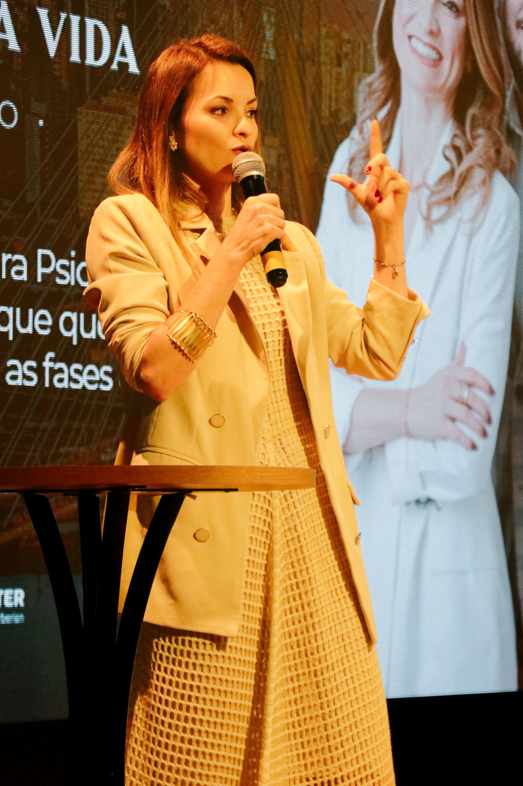
São Paulo · 2025
2ª edição
Uma sala ampliada, marcada por casos, perguntas e discussões clínicas que impulsionaram uma nova etapa da trajetória.
Assistir registro →Uma discussão clínica sobre risco, recurso e responsabilidade no ambiente digital.
Quando reduzir telas, como reorganizar o ambiente digital e quais tecnologias podem funcionar como recurso terapêutico.
A clínica contemporânea exige diferenciar sintomas persistentes de padrões de desregulação atravessados pelo ambiente digital.
Sintomas que nem sempre são TDAH, mas exigem leitura clínica cuidadosa.
Antes desta 3ª edição, a Imersão TDAH ao longo da vida reuniu profissionais em Recife e São Paulo para discutir atenção, desenvolvimento, diagnóstico e manejo clínico nas diferentes fases da vida.
Agora, a 3ª edição desloca essa discussão para um novo desafio clínico: como pensar o TDAH na era digital?

Uma sala ampliada, marcada por casos, perguntas e discussões clínicas que impulsionaram uma nova etapa da trajetória.
Assistir registro →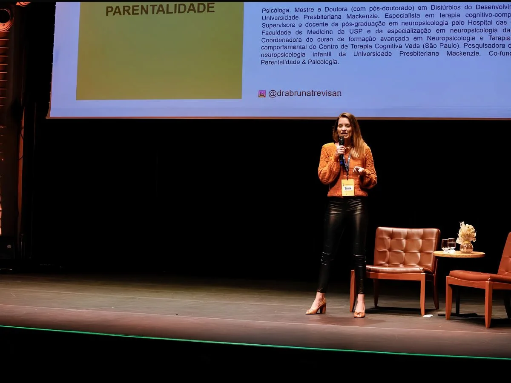
O início de uma imersão presencial dedicada ao raciocínio clínico sobre o TDAH ao longo da vida.
Assistir registro →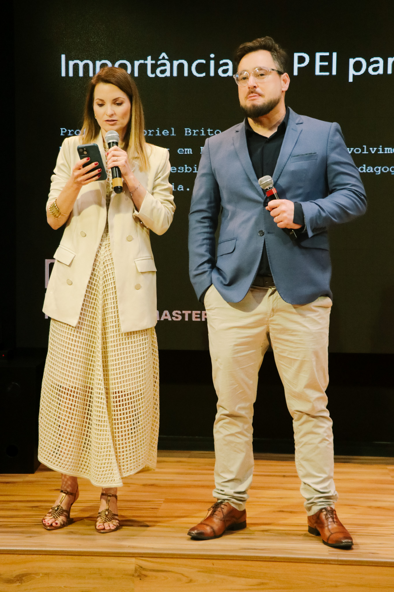
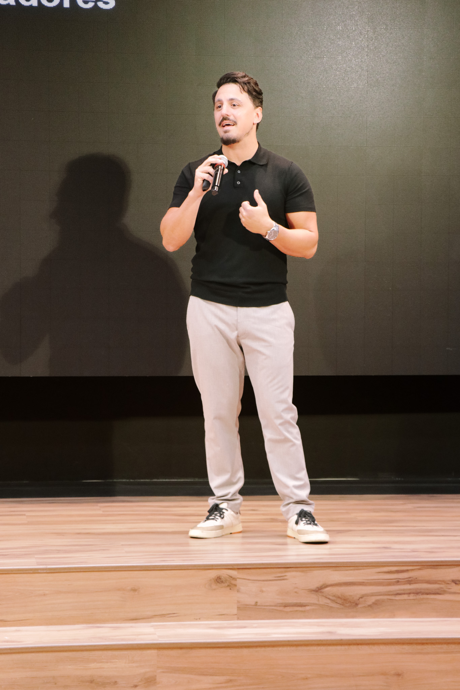
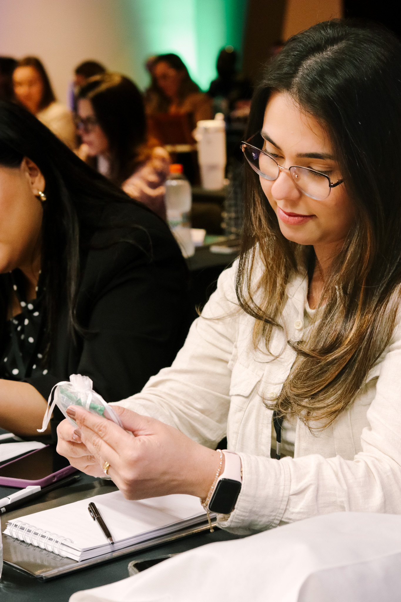
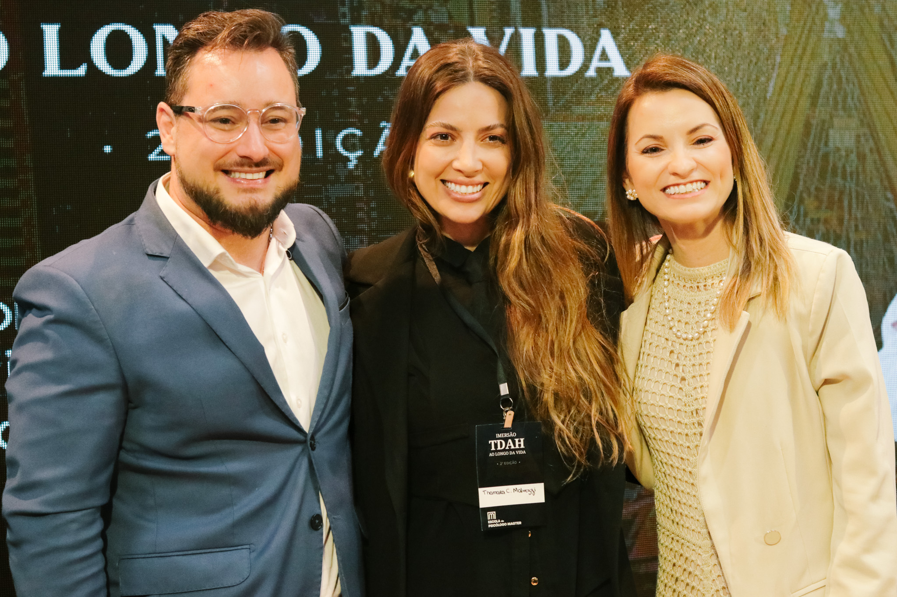
“A imersão mudou a forma como levo perguntas para a clínica.”
Psicóloga · 2ª Edição · São Paulo · 2025
TDAH, hiperestimulação ou um ambiente incapaz de sustentar regulação? Cenas comuns, sintomas ambíguos e decisões clínicas que exigem mais do que reduzir telas ou confirmar diagnósticos.
Criança que só regula com a tela.
Quarto às 2h da manhã: celular e monitores acesos.
Mesa de trabalho. Notificações que não param.
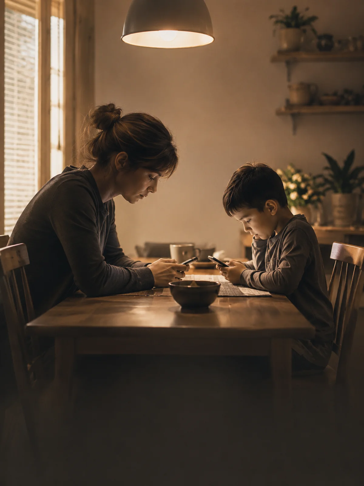
Jantar em silêncio. Duas telas, dois mundos.
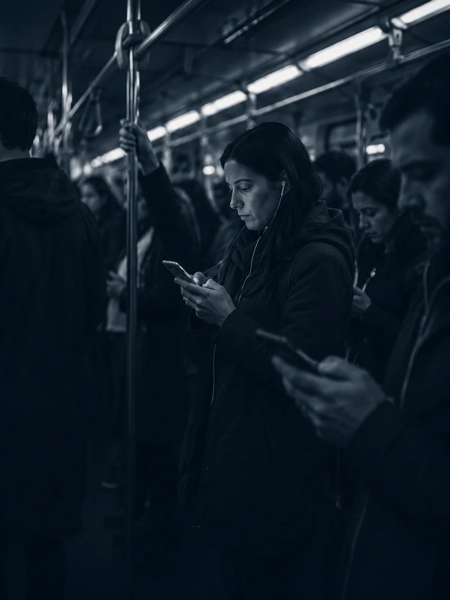
Vagão cheio. Cinquenta pessoas, zero contato.
Paciente que pede diagnóstico antes de relato.
UNIFESP · USP · PhD Psiquiatria
Psicólogo e neuropsicólogo clínico, com mais de 20 anos de prática clínica. Doutor em Psiquiatria pela UNIFESP. Especialista em Neuropsicologia e TCC pela USP. Por oito anos, coordenou o Serviço de Neuropsicologia do Programa de Esquizofrenia da UNIFESP. Foi pesquisador do Laboratório de Neurociências Clínicas da UNIFESP. Docente e supervisor clínico nas Especializações em Neuropsicologia (UNIFESP) e TCC (CTC Veda — Faap). CRP 06/86877

Mackenzie · FMUSP-HC · UNIFESP · Pós-doc
Psicóloga e neuropsicóloga, Doutora e pós-doutora em Distúrbios do Desenvolvimento pelo Mackenzie. Especialista em TCC pelo CTC Veda (DGERT, União Europeia). Tem 18 anos de prática dedicada ao neurodesenvolvimento. Docente e supervisora clínica nas Especializações em Neuropsicologia da FMUSP-HC e da UNIFESP com mais de mil casos clínicos supervisionados.
Pesquisadora do grupo de Neuropsicologia Infantil da Mackenzie. CRP 06/94301
Casos clínicos, discussões em mesa e um caso longitudinal atravessando infância, adolescência e vida adulta — da avaliação à condução clínica na era digital.
Infância, adolescência e vida adulta — o mesmo paciente atravessando diferentes ambientes, sintomas e hipóteses clínicas ao longo do tempo.
Entre hiperconectividade, colapso atencional e tecnologia como recurso terapêutico.
Casos reais, decisões difíceis e raciocínio clínico compartilhado entre profissionais da DTC.
Uma mesa aberta entre clínicos — perguntas difíceis, impasses diagnósticos e discussões construídas ao vivo. É onde o dia se condensa.
Espaço reduzido por escolha — máximo de 200 participantes. Experiência presencial desenhada para discussão clínica profunda, troca qualificada e permanência ao longo do dia. Sem transmissão online: o que acontece na sala é o que sustenta a discussão.
Psicólogos clínicos, neuropsicólogos, psiquiatras e profissionais dedicados ao TDAH ao longo da vida — reunidos para discutir casos, diagnóstico e condução clínica em um ambiente de troca qualificada.
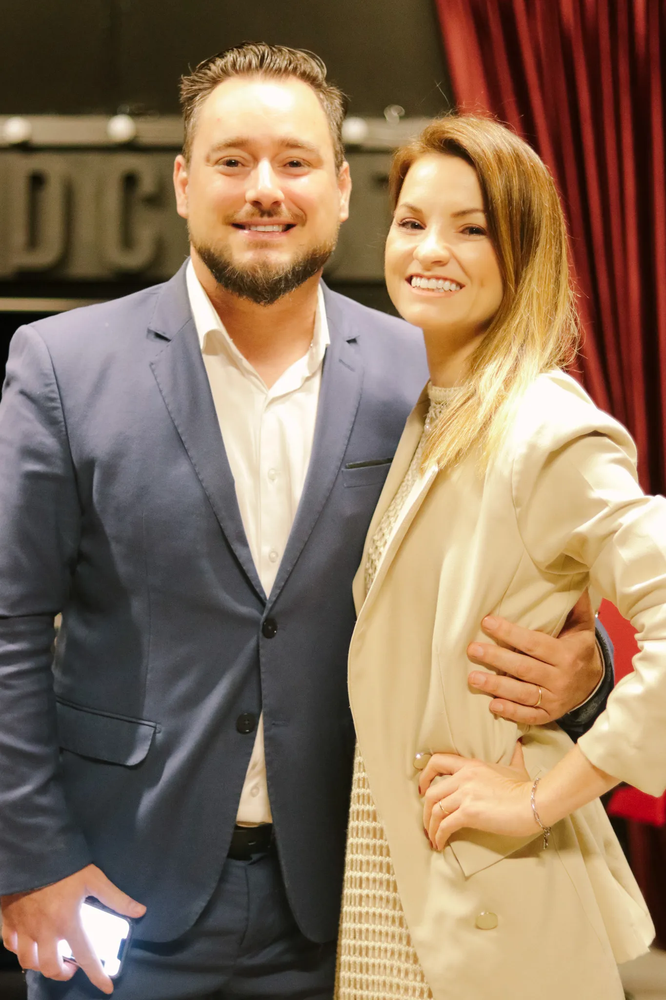
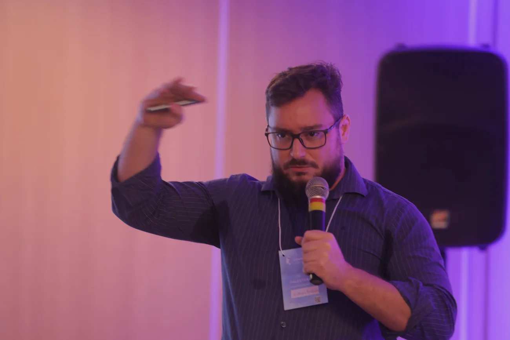
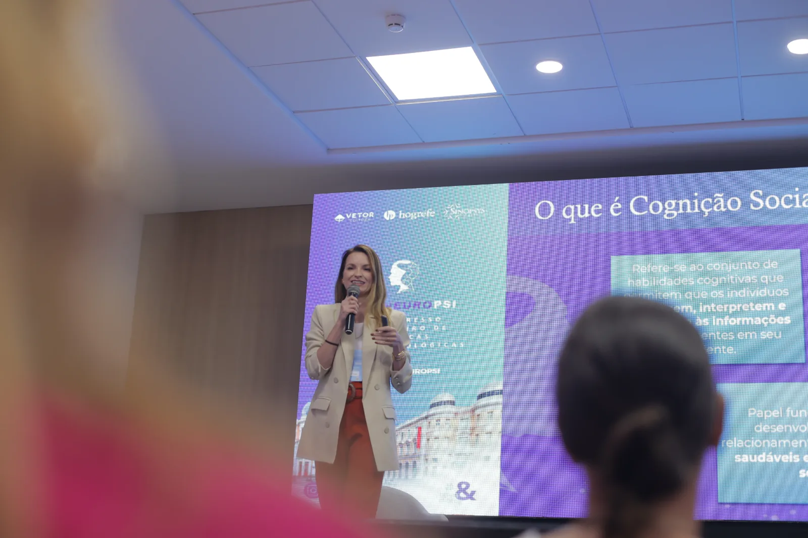
Um caso longitudinal, discussões clínicas, tecnologia como contexto e decisões construídas em tempo real.
A imersão entrega enquadres clínicos, não técnicas isoladas. Aprendizados que reorganizam a leitura do caso a partir do segundo atendimento.
Aprofundamento clínico para distinguir transtorno do neurodesenvolvimento dos padrões cognitivos e comportamentais produzidos pelo excesso de estímulo — fenômenos que se sobrepõem e se confundem na clínica contemporânea.
Um eixo de leitura que não reduz o caso a uma única hipótese.
Critérios clínicos para integrar telas, plataformas e IA ao plano terapêutico com clareza ética. Sem demonização e sem entusiasmo ingênuo.
Direções clínicas para o ciclo que mantém o sintoma — sem moralismo, sem manuais rasos, sem ignorar que o adulto também precisa ser cuidado.
Saí pensando diferente sobre metade dos meus casos. Não era um conteúdo a mais — era um eixo a menos que eu estava ignorando.
Voltei para o consultório com perguntas melhores para casos que eu achava já compreender. Esse é o tipo de imersão que muda como você escuta.
Foi a primeira vez em muito tempo que saí de um evento clínico sem a sensação de que tinha visto a mesma coisa repetida com outras palavras.
A discussão entre Arthur e Bruna sustenta o nível. Não é uma palestra dupla — é raciocínio em ato, e isso faz uma diferença enorme.
Quanto antes você confirma, menos paga. Não é truque de venda — é a forma honesta de garantir espaço para aprofundar, atualizar e aplicar o conhecimento na clínica.
A era digital mudou a forma como prestamos atenção. A clínica precisa aprender a ler essa mudança.
Participar da imersão →Uma experiência presencial para clínicos que querem investigar TDAH com mais nuance, precisão diagnóstica e responsabilidade clínica.